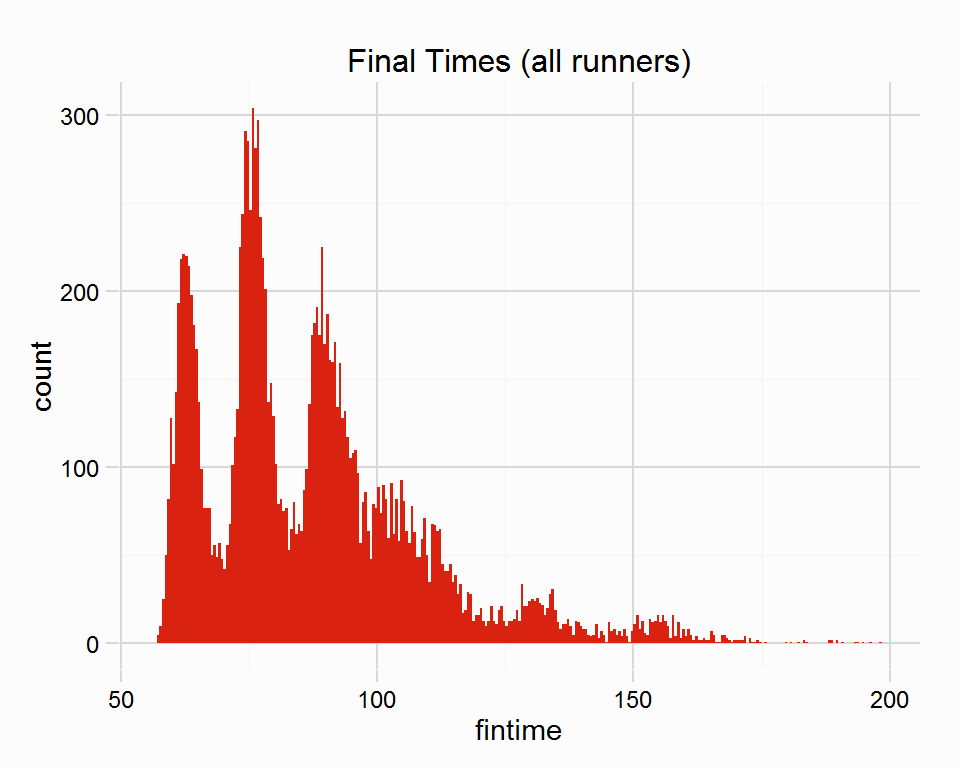

This lengthy vignette looks at using the RcappeR on some wild horse racing data found in this github repo. This vignette, created on 2015-09-24, has emphasised that the package is in development, and the need for more functionality to aid the cleaning and preparation of racing data. So the package will be improved on over time, but where I’ve bumped into an cleaning/preparation issue here I’ve created a quick and dirty hacks to solve them.
The vignette will walk through reducing the dataset to a subset of races, cleaning a number of variables necessary for analysis and handicapping, before preparing data ahead of initialising a very simple handicap using zipf_init and finally showing the use of zipf_hcp.
library(RcappeR)
library(dplyr) # for speedy manipulation of dataframes
library(magrittr) # for %<>%
library(stringr) # for manipulating strings
library(ggplot2) # for plottingNow load the csv file, and view its structure.
# working on windows I couldn't use read.csv inside an .Rmd file, so used answer from
# http://stackoverflow.com/questions/19890633/r-produces-unsupported-url-scheme-error-when-getting-data-from-https-sites
df <- RCurl::getURL(url = "https://raw.githubusercontent.com/maithuvenkatesh/University-Project/master/Data/born98.csv",
ssl.verifypeer = 0L, followlocation = 1L)
df <- read.csv(text = df, fill = TRUE, sep = "\t", stringsAsFactors = FALSE)
str(df)## 'data.frame': 56730 obs. of 26 variables:
## $ race_date : chr "2003-09-28" "2003-09-28" "2001-06-19" "2001-06-19" ...
## $ race_time : chr "15:10:00" "15:10:00" "15:05:00" "15:05:00" ...
## $ track : chr "Ascot" "Ascot" "Ascot" "Ascot" ...
## $ race_name : chr "Riggs Bank Rated Stakes " "Riggs Bank Rated Stakes " "Kings Stand Stakes " "Kings Stand Stakes " ...
## $ race_restrictions_age: chr "3yo+" "3yo+" "3yo+" "3yo+" ...
## $ race_class : chr "Class 2" "Class 2" "Class 1" "Class 1" ...
## $ major : chr "" "" "Group 2" "Group 2" ...
## $ race_distance : chr "5f " "5f " "5f " "5f " ...
## $ prize_money : int 12835 12835 81000 81000 81000 81000 81000 81000 5538 78300 ...
## $ going_description : chr "Firm" "Firm" "Good" "Good" ...
## $ number_of_runners : int 16 16 22 22 22 22 22 22 12 15 ...
## $ place : chr "6th" "14th" "9th" "11th" ...
## $ distbt : chr "HD" "5" "SH" "HD" ...
## $ horse_name : chr "My American Beauty" "Talbot Avenue" "Danehurst" "Dietrich (USA)" ...
## $ stall : int 19 16 14 21 11 6 20 10 7 1 ...
## $ trainer : chr "Easterby, T D" "Mullineaux, M" "Prescott, Sir Mark" "OBrien, A P" ...
## $ horse_age : int 5 5 3 3 3 3 3 3 3 4 ...
## $ jockey_name : chr "Fanning, Joe" "Fallon, K" "Duffield, G" "Kinane, M J" ...
## $ jockeys_claim : int 0 0 0 0 0 0 0 0 0 0 ...
## $ pounds : int 119 121 119 119 122 122 119 119 134 128 ...
## $ odds : num 33 14 10 10 100 20 50 20 4.5 66 ...
## $ fav : chr "" "" "" "" ...
## $ official_rating : int 86 88 109 0 87 0 110 120 76 108 ...
## $ comptime : chr "1 mins 0.49s" "1 mins 0.49s" "1 mins 0.49s" "1 mins 0.49s" ...
## $ TotalDstBt : chr "5.15" "12.7" "3.25" "3.85" ...
## $ X : logi NA NA NA NA NA NA ...So the dataset consists of 56730 rows and 26 columns. From a quick inspection a number of important variables exist that will help to identify the unique races within the dataset, namely race_date, race_time and track (the race_name could be included as well, although some races could have the same name so shouldn’t be used on its own).
Ideally every unique race in the dataset will have every runner that competed in that race, a way to check this is to use the number_of_runners variable and a count of the number of rows that belong to a unique race. The following code, groups races together using the aforementioned variables, creates a new variable (n) that counts the number of rows, and then filters those rows where n == number_of_runners.
races <- df %>%
group_by(race_date, race_time, track) %>%
mutate(n = n()) %>%
filter(n == number_of_runners)The new dataset has 14494 rows. The RcappeR package also doesn’t truly cater for National Hunt racing (see ?lbs_per_sec), so those races need to be excluded. It’s not immediately obvious how to do this from the available variables, but the stall variable will suffice, horses running National Hunt races don’t start in a stall, these horses begin in “stall” 0 in the dataset. A quick look at races where horses start in stall 0, reveals they are Novice Hurdle races.
races %>% filter(stall == 0) %>%
group_by(race_date, race_time, track, race_name) %>%
summarise(n = n()) %>%
select(race_name, n)## Source: local data frame [3 x 5]
## Groups: race_date, race_time, track
##
## race_date race_time track race_name n
## 1 2001-08-03 14:25:00 Bangor Hollybush Juvenile Novices Hurdle 10
## 2 2001-08-27 14:15:00 Cartmel Lakeland Health Juvenile Novices Hurdle 8
## 3 2001-10-11 15:10:00 Ludlow Discover Racing Juvenile Novices Hurdle 7races %<>% filter(stall != 0)Now the dataset (should hopefully) consist of purely flat races, the task of cleaning can begin.
The majority of variables should be self explanatory, however they are not in the nicest formats. For example comptime is the final time of the winner of a race in a character format, which is quite useless.
## [1] "1 mins 2.75s" "1 mins 3.18s" "1 mins 2.86s" "1 mins 4.61s"
## [5] "1 mins 0.46s" "0 mins 58.5s"The conv_times function from RcappeR will clean these times, returning a time in seconds. These times are immediately more pliable and can be plotted (using the custom RcappeR ggplot theme theme_rcapper()).
races %<>% mutate(wintime = conv_times(times = comptime))
head(unique(races$wintime))## [1] 62.75 63.18 62.86 64.61 60.46 58.50The place variable requires cleaning, these are currently stored as strings, in order to cater for horses who were pulled up, unseated rider, etc. The letters are removed from each place string, and are converted to numeric, so those horses pulled up (“PU”), etc, are recorded as NA’s, these horses can be removed for handicapping purposes.
table(races$place)##
## 10th 11th 12th 13th 14th 15th 16th 17th 18th 19th 1st 20th 21st 22nd 23rd
## 717 581 474 352 275 235 182 136 104 66 1388 55 42 30 18
## 24th 25th 26th 27th 28th 29th 2nd 30th 3rd 4th 5th 6th 7th 8th 9th
## 13 8 6 6 5 5 1385 2 1389 1378 1321 1236 1128 1009 868
## BD DSQ F LFT PU RO RR SU UR
## 2 10 1 5 17 1 2 3 14races$place %<>% str_replace_all(pattern = "[[:alpha:]]", replacement = "") %>%
as.numeric()
table(races$place, useNA = "ifany")##
## 1 2 3 4 5 6 7 8 9 10 11 12 13 14 15
## 1388 1385 1389 1378 1321 1236 1128 1009 868 717 581 474 352 275 235
## 16 17 18 19 20 21 22 23 24 25 26 27 28 29 30
## 182 136 104 66 55 42 30 18 13 8 6 6 5 5 2
## <NA>
## 55races %<>% filter(!is.na(place))The next variable that requires cleaning are the distbt and TotalDstBt variables, the former is lengths between runners, while the latter is cumulative lengths (so lengths behind the winner). Both are strings that contain abbreviations such as “SH” (short head), “HD” (head), and can be converted to a numeric using the conv_len function. It is not important which variable is converted, either can be used in future.
races %<>% mutate(btn_l = conv_len(lengths = distbt),
cum_btn_l = conv_len(lengths = TotalDstBt))
races %>% filter(place != 1) %>%
ggplot(aes(x = cum_btn_l, y = ..density..)) +
geom_histogram(binwidth = 1, fill = "#D9220F") +
labs(title = "Cumulative Beaten Lengths") +
theme_rcapper()The race_distance variable is also in need of cleaning, it contains miles, half miles as Unicode characters, and furlongs. RcappeR doesn’t have a function to convert distances from “miles-furlongs-yards” into “furlongs” (the required unit of measure if using lbs_per_sec), so a quick hack has been written for this post, but a more robust conv_dist function should be added to the package. The function is not show here, but can be viewed in the .Rmd source.
## [1] "5f " "5<U+00BD>f " "6f " "6<U+00BD>f " "7f " "7<U+00BD>f " "1m "
## [8] "1m<U+00BD>f " "1m1f " "1m1<U+00BD>f " "1m2f " "1m2<U+00BD>f " "1m3f " "1m3<U+00BD>f "
## [15] "1m4f " "1m4<U+00BD>f " "1m6f " "1m6<U+00BD>f "races %<>% mutate(dist = tmp_fun(race_distance))
unique(races$dist)## [1] 5.0 5.5 6.0 6.5 7.0 7.5 8.0 8.5 9.0 9.5 10.0 10.5 11.0 11.5
## [15] 12.0 12.5 14.0 14.5With the cleaning done, and variables in much more workable formats, some preparation ahead of handicapping/analysis can be carried out. As covered in the Handicapping Preparation vignette, we have a number of important variables available to us:
race_date, race_time and track)race_class)dist in furlongs)wintime, which will allow us to calculate final times for all runners using cum_btn_l or btn_l)pounds)The first thing to do is to calculate final times for all runners using the winning time in a race (wintime) and the margins between horses in lengths (either btn_l or cum_btn_l). The BHA (British Horse-Racing Authority), under whose jurisdiction these races were run, uses a different lengths per second scale depending on race conditions (namely going and type of race - Flat or NH, see ?bhasale). The RcappeR function conv_margins can account for these differences, however the conditions must be an abbreviated form of the going and type of race, which I’m not going to create here - but a function will be written for RcappeR to convert the different goings, such as Good To Firm, Standard, Good To Yielding into the correct abbreviations. The default lengths per second value used in the conv_margins function is 5, which is used here.
The following code calculates final times for all runners using the wintime and cum_btn_l variables, as well as beaten seconds. The second chunk of code uses the btn_l variable and the wintime, which requires a bit more code as runners in a race must be grouped and arranged in position order (so cumulative lengths beaten can be calculated). The final times of all runners are then plotted, the different peaks belonging to the different race distances.
races %<>% mutate(fintime = conv_margins(btn_l = cum_btn_l, win_time = wintime),
btn_sec = conv_margins(btn_l = cum_btn_l))
## if only btn_l variable existed
# races %<>%
# group_by(race_date, race_time, track) %>%
# arrange(place) %>%
# mutate(fintime = conv_margins(btn_l = btn_l, cum_l = FALSE, win_time = wintime))
ggplot(races, aes(x = fintime)) +
geom_bar(binwidth = .5, fill = "#D9220F") +
labs(title = "Final Times (all runners)") +
theme_rcapper()
The next step in handicapping process is to calculate the lbs between runners using the lbs_per_sec function, which accounts for race distance and surface, for this simple example I will elimate all All-Weather races using the going_description, removing “Standard” and “Slow” goings. The code that follows calculates a lbs per second scale (scale), and uses that to calculate beaten lbs (btn_lbs). (the lbs_per_sec function will eventually be improved to account for the speed at which a horse ran it’s race.)
races %<>% filter(!grepl("Standard|Slow", going_description, ignore.case = TRUE))
races %<>% mutate(scale = lbs_per_sec(dist = dist, surf = "turf"),
btn_lbs = scale * btn_sec)A difference at the weights calculation is next, which sums the beaten margin in lbs and the difference in weight carried (pounds in the dataset). To use this function the dataset should be grouped into individual races (it already has been when the dataset was first reduced), and arranged by finishing position (place variable in the dataset). A quick look to check everything looks grouped and in order.
races %>%
arrange(place) %>%
select(race_date, race_time, track, place, horse_name, fintime, btn_lbs)## Source: local data frame [12,417 x 7]
## Groups: race_date, race_time, track
##
## race_date race_time track place horse_name fintime
## 1 2000-03-23 14:05:00 Doncaster 1 Nearly A Fool 60.55
## 2 2000-03-23 14:05:00 Doncaster 2 Shoeshine Boy (IRE) 60.85
## 3 2000-03-23 14:05:00 Doncaster 3 Millys Lass 61.00
## 4 2000-03-23 14:05:00 Doncaster 4 Viscount Bankes 61.25
## 5 2000-03-23 14:05:00 Doncaster 5 Sir Francis (IRE) 61.35
## 6 2000-03-23 14:05:00 Doncaster 6 Magic Box 61.38
## 7 2000-03-23 14:05:00 Doncaster 7 Quizzical Lady 61.53
## 8 2000-03-23 14:05:00 Doncaster 8 Bold McLaughlan 61.68
## 9 2000-03-23 14:05:00 Doncaster 9 Midnight Venture 61.71
## 10 2000-03-23 14:05:00 Doncaster 10 Densim Blue (IRE) 62.06
## .. ... ... ... ... ... ...
## Variables not shown: btn_lbs (dbl)races %<>%
arrange(place) %>%
mutate(diff_wgts = diff_at_wgts(btn_lbs = btn_lbs, wgt_carried = pounds))With the differance at the weights calculated, I will show the use of RcappeR’s zipf_init and zipf_hcp with a subset of races that belong to Class 1 or 2 (race_class variable). I will also extract one race from this subset that will be used to show zipf_hcp.
subset_races <- races %>%
filter(race_class %in% c("Class 1", "Class 2")) %>%
ungroup()
# the race to be extracted is the Zetland Stakes
zetland_stakes <- subset_races %>% filter(grepl("Zetland Stakes", race_name, ignore.case = TRUE))
# it is also removed from the subsetted races
subset_races %<>% filter(!grepl("Zetland Stakes", race_name, ignore.case = TRUE))First to initialise a handicap using zipf_init, which requires a dataset of unique races that have been prepared as above, ie. culminating in a difference at the weights calculation. The zipf_init function takes 4 parameters, the first param is our subset_races, the second is how to group the races so each group contains races of a similar type or class (ie race_class), the third is a way to identify the unique races (ie race_date, race_time and track), the final param is the difference at the weights value (diff_wgts). An optional fifth param is for plyr’s progress bar (not entered here).
hcp <- zipf_init(races = subset_races, group_by = "race_class", race_id = c("race_date", "race_time", "track"), btn_var = "diff_wgts")The zipf_init function returns a list of class rcapper_zipf_init which has print, summary, and plot S3 methods (although print and summary produce the same output, which could be improved).
summary(hcp)## Initial handicap using zipf_init:
##
## No. of races:
## 120
## Race Groups:
## Class 1, Class 2
## Counts:
## Class 1 Class 2
## 64 56
##
## Ratings Summary:
## Min. 1st Qu. Median Mean 3rd Qu. Max.
## -11.5800 -4.9040 -0.6394 0.0000 2.4760 25.2000plot(hcp)The plot shows a zipf_rtg for winners per group, for a full explanation about how a rating is calculated see the zipf_race vignette.
In short those winners who have beaten their rivals by larger difference at the weights will be awarded a higher zipf_rtg than those who narrowly beat rivals. Each race in a group is assessed using the other races in the same group, so a race in Class 1 was assessed using the other N races in the group, which produces a difference between the winner of one race and the winners of the others. The average will always be zero (or very close to zero).
The use of zipf_init only serves as an example here, the second parameter, which groups races together according to a variable the user enters, is very important. Ideally each group should contain horses of a similar ability, so in the UK Class 1 races are contested by better horses than Class 2 races, however, within each class there are likely to be further differences. Class 1 races in this dataset also include Group 1, 2, 3 and Listed races (see the major variable), which are contested by horses of differing abilities. Experience and domain-expertise can help establish rough groups, but unless the number of races is large, then splitting the races into smaller and smaller groups isn’t wise.
zipf_init, as it’s name suggests, only initialises a handicap, within each group. The next step is to establish the differences between these groups, ie. the difference between an average winner of a Class 1 race vs a Class 2 race, or the difference between an average Group 1 winner and an average Group 2 winner. A possible solution could be to use existing ratings, in this dataset there is the official_rating variable which is the ratings assigned by the BHA, which could be used as a guide to establish the differences between Class 1 and Class 2, eg:
# copy races dataframe so we can work on it
tmpdf <- races
# as the dataset contains a lot of 2yo's a lot of horses have an official_rating of 0, where NA is more appropriate
tmpdf$official_rating[which(tmpdf$official_rating == 0)] <- NA
# now group the races according to race_class and calculate the average official_rating
tmpdf %>%
group_by(race_class) %>%
summarise(avg_rating = mean(official_rating, na.rm = TRUE))## Source: local data frame [7 x 2]
##
## race_class avg_rating
## 1 Class 1 96.74823
## 2 Class 2 85.78538
## 3 Class 3 79.01458
## 4 Class 4 71.50265
## 5 Class 5 61.46076
## 6 Class 6 53.21881
## 7 Irish 79.53040The difference in race_class is clear and could be used (temporarily at least) to establish the difference between one group and another. Establishing the differences is a challenge, and the RcappeR package can’t offer a solution (at the moment at least).
These ratings found in the hcp list can be merged with the subset_races via the RcappeR function merge_zipf_init, which is done now, the function can calculate ratings for all runners by entering the diff_wgts variable into the btn_var param. The average ratings per race_class established above will be used as an example, average Class 1 race winner will be awarded 97, while average Class 2 winner 86.
The code below also subsets Class 1 races that will be used to handicap the Listed race extracted earlier, the Zetland Stakes.
# merge list returned by zipf_init and subset_races
subset_races <- merge_zipf_init(zipf_list = hcp, races = subset_races, btn_var = "diff_wgts")
# use average ratings per group
subset_races$zipf_rtg[which(subset_races$race_class == "Class 1")] <- 97 + subset_races$zipf_rtg[which(subset_races$race_class == "Class 1")]
subset_races$zipf_rtg[which(subset_races$race_class == "Class 2")] <- 86 + subset_races$zipf_rtg[which(subset_races$race_class == "Class 2")]
class1_races <- subset_races %>% filter(race_class == "Class 1")Now to show zipf_hcp, we have a group of races that have been handicapped and ratings calculated, class1_races, and we have a race that requires handicapping zetland_stakes. The zipf_hcp function uses a collection of similar races and their ratings, to calculate potential ratings for the winner of a new, un-rated race.
hcp <- zipf_hcp(race = zetland_stakes, past_races = class1_races, race_id = c("race_date", "race_time", "track"), btn_var = "diff_wgts", rating = "zipf_rtg")
plot(hcp)The plot shows a distribution of potential ratings for the winner of the Zetland Stakes, these potential ratings are calculated using each of the races in class1_races, the average rating, 102.1751563 is also shown. As the plot suggests, using more races would likely strengthen the confidence in a rating.